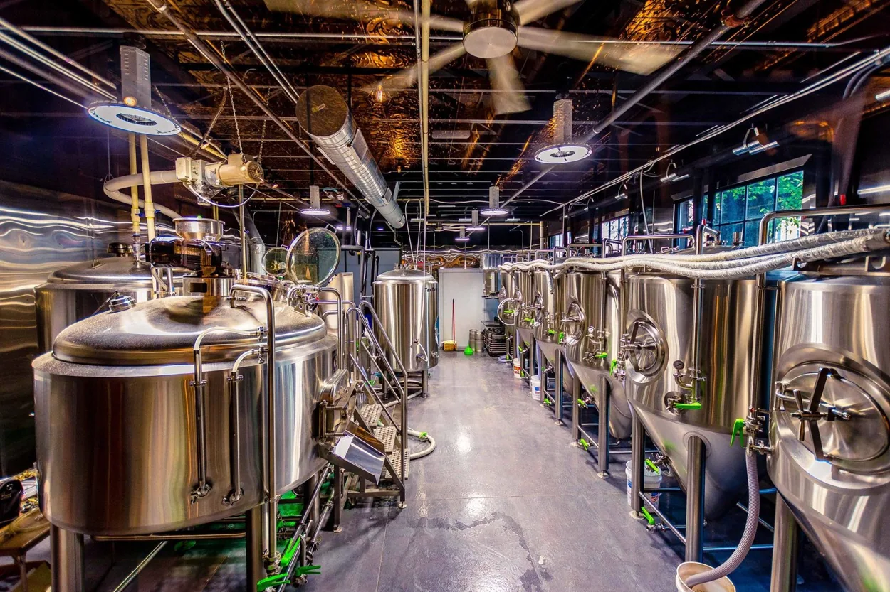

Our ten-barrel brewhouse
Beers from Hopskeller
English ales, Pacific Northwest influences, and seasonal beers brewed right here in Waterloo.

Explore the beer lineup
Check the drink menu for current tap availability.
CREAMY PEACH ALE (4.6% ABV, 8 IBU)
With its unmistakable hazy orange appearance and fruity aroma, our Creamy Peach Ale is a crowd favorite in the summer. Over 80 lbs of peach and 40 lbs of apricot are added to a light American wheat ale, rounded off with lactose for a sweet and medium-bodied summery ale. (allergy warning: contains peaches, apricots, lactose)
RASPBERRY ALE (6.0% ABV, 9 IBU)
Our “flagship beer” and an easy drinker! Aged on raspberries after fermentation, this wheat beer is sweet but tart, with just a hint of raspberry flavor and aroma. The Raspberry Ale is best enjoyed on its own, but our pizzas pair well with the beer’s subtle raspberry flavor (allergy warning: contains raspberries).
HANG GLIDER LIGHT LAGER (3.7% ABV, 8 IBU)
Our light lager is made with English Pearl malt, crisp rice, and English hops to create a unique spin on the quintessential lawnmower beer. With a subtle malt backbone and a crystal-clear finish, this crowd-pleaser is just what you need for patio weather!
MARKET CROSS LONDON LAGER (5.3% ABV, 20 IBU)
Modeled off lagers popular in London in the 1920s, this beer is a unique experience that brings together heritage English malts alongside Fuggles and East Kent Goldings hops. Clean, refreshing, and decidedly English, this all-around easy drinker is perfect for fans of lighter beers and those looking for a lager interpreted in English style.
CASCADIA AMERICAN AMBER ALE (5.8% ABV, 28 IBU)
A true homage to life in the American Northwest, Cascadia is a complex and lively American amber ale, hopped generously with late additions of Cascade hops and dry-hopped with Cascade once again. Rich malt flavors provide a caramel and bready background to the citrus and slight pine aromas and flavor of Oregon’s most beloved hop.
MONROE MEADOWS HONEY ALE (6.8% ABV, 5 IBU)
Dedicated to the prairies of Monroe County, this refreshing brew contains American wheat and a small dose of heirloom English barley. Drawn from hives just west of town, local honey from The Blessed Bee gives this beer an unmistakable floral and crisp note. Late additions of yarrow and elderflower round out the finish. If you ever wanted to take in the best of our local meadows, this is a great start (allergy warning: contains wheat, honey, elderflower, yarrow).
HIGH DESERT PALE ALE (5.5% ABV, 22 IBU)
A smooth, malt-forward beer that takes the grain bill and hop profile of an Oktoberfest and is re-interpreted as a Northwestern American pale ale. An easy-drinking crowd pleaser with a unique malt profile and a somewhat dry finish. 100% of the grain for this beer comes from Mecca Grade Estate Malt, grown and malted by a family farm in Oregon’s High Desert region.
BLUEGRASS BREEZE AMERICAN WHEAT ALE (4.5% ABV, 20 IBU)
Perfect for day-drinking during any season! With a bright and fruity currant-like aroma and a mouth-watering combination of bready, caramel, and biscuit flavors, this malt-forward ale is a fun and easy-drinking beer that’s great with food or by itself.
NORTHERN ENGLISH BROWN ALE (5.9% ABV, 26 IBU)
Inspired by ales historically made around the Great Northern coalfields of England in the late 19th and early 20th centuries, this dark beer features roasted chocolate and coffee flavors with deep caramel and toffee notes. Complex, robust, and the ultimate “food beer,” this brew pairs well with any of our wood-fired eats. Winner of the 2018 Post-Dispatch’s “Top Pours” event for “Best Darker Beer.”
ZERO NEW ENGLAND IPA (7.1 % ABV, “0” IBU)
A massively-hopped ale featuring none of the bitterness typically associated with hops—so little, in fact, that the beer has no IBUs to its name! This hazy, straw-colored beer greets you with an intense burst of tropical aromas from El Dorado, Mosaic, and Amarillo hops that call to mind grapefruit, stone fruit, tangerines, and pineapple (allergy warning: contains mango, pineapple).
ACROSS THE POND IPA (7.2 % ABV, 55 IBU)
This IPA merges the best of two styles: the grains, mineral profile and balance of a classic English IPA, and the bold hop flavors of a medley of the “4 Cs” (plus Citra!) classic to IPAs of the American NW. A lively ale featuring the dank resin, citrus and pine notes of Northwestern IPAs, yet crisp enough to make you want another!
SPAGHETTI WESTERN ITALIAN PILS (5.25 ABV, 32 IBU)
Every brew makes its own tune, and our Spaghetti Western Italian-American Pils is no exception. This is also former assistant brewer Conner McDonald’s first solo recipe, and it’s a great one! Brewed with lemongrass and basil, and dry-hopped with Northern Brewer, expect a rich aroma of basil, mint, and oregano over the prominent malt profile. A sweet maltiness pervades through the initial flavor, alongside flavors of lemon and basil -- the finish is dry and crisp, and the mouthfeel is light enough to bring you back for more. This beer is the perfect beer to go with our pizzas -- medium-bodied, crisp, and just herbal enough to be intriguing. We hope you enjoy drinking it as much as we do bringing it to tap!
WATERLOO GOLD SPICED ALE (5.1 ABV, 25 IBU)
Modeled off the historic Reading Ale style, Waterloo Gold adds a little twist -- replacing coriander for cardamom. This crisp, easy-drinking English golden ale greets you with a spicy aroma; on the flavor, expect the most subtle of black pepper, ginger, and citrus notes. Fans of Belgian ales may enjoy the spicy notes throughout this beer! (allergy warning: contains grains of paradise, cardamom)
MOCO MOCHA COFFEE CHOCOLATE MILK STOUT (7.4% ABV, 40 IBU)
A generous portion of milk sugar combined with cocoa and cold brew coffee extract from our friends at Living Millennially in Maeystown makes for a dark, rich beer. Expect coffee on the nose and the front of the taste, and chocolate on the finish.
MOORGATE PORTER (5.4% ABV, 22 IBU)
Moorgate is our darkest beer on tap -- but don’t let the color scare you! Taking cues from the easy-drinking porters popular among the working class of London in the 19th Century, Moorgate features the moderate roast and chocolate flavors we expect from a porter, as well as a medium body that keeps the overall experience a refreshing one. Fans of darker beers will appreciate the complexity of the malt bill; it’s also a great introductory beer to the world of dark ales!